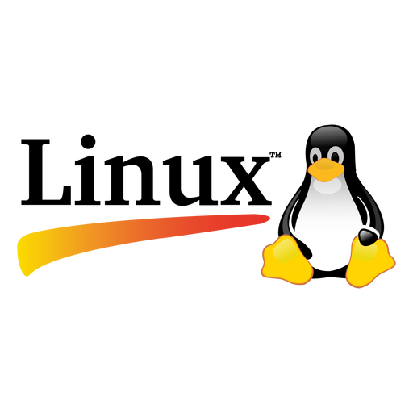

LINUX
1. 基本操作
Linux是目前最廣泛使用的伺服器作業系統，幾乎所有雲端服務、網頁伺服器都跑在Linux上。學Linux主要是透過「終端機（Terminal）」下指令操作，雖然一開始看起來很嚇人，但掌握基本指令後效率遠超圖形介面。
最基本的導航指令：pwd（Print Working Directory）顯示目前所在的路徑；ls列出當前目錄的檔案，加-l顯示詳細資訊（權限、大小、時間），加-a顯示隱藏檔（以.開頭的檔案）；cd切換目錄，cd ..回上一層，cd ~回家目錄，cd /到根目錄。
Linux的路徑有兩種：「絕對路徑」從根目錄/開始，例如 /home/user/documents；「相對路徑」從目前位置出發，例如 ./documents 或 ../other。.代表目前目錄，..代表上一層目錄，~代表家目錄。
幾個超實用的操作技巧：Tab鍵自動補全指令和路徑，是效率神器；↑↓方向鍵可以瀏覽歷史指令；history顯示所有歷史指令；clear清空畫面；Ctrl+C強制中斷正在執行的程式；Ctrl+Z暫停程式放到背景。
想知道某個指令怎麼用，有兩個方法：man 指令名（Manual）顯示完整說明書，按Q離開；或是指令名 --help顯示簡短說明。剛開始學Linux遇到不確定的指令，查man和help是最正確的做法！
2. 檔案管理
Linux的「檔案管理」全靠指令完成，掌握這幾個就能應付大多數情況。mkdir 目錄名建立新目錄（Make Directory），加-p可一次建立多層目錄，例如：mkdir -p a/b/c；rmdir 目錄名刪除空目錄。
touch 檔名建立空白檔案（或更新檔案的時間戳記）；cp 來源 目的複製檔案，加-r可複製整個目錄；mv 來源 目的移動或重新命名檔案（在同目錄下移動就等於重新命名）；rm 檔名刪除檔案，加-r刪除目錄，加-f強制刪除不詢問。
⚠️ 要特別注意：Linux沒有資源回收桶，rm刪掉的檔案幾乎無法恢復！尤其是rm -rf /（刪除根目錄所有東西）這種指令絕對不要執行，是毀滅性的操作。刪除前最好先用ls確認路徑正確。
搜尋檔案用find 路徑 -name "檔名"，支援萬用字元，例如：find /home -name "*.txt" 找所有txt檔；搜尋檔案內容用grep "關鍵字" 檔名，加-r可遞迴搜尋整個目錄，加-i忽略大小寫，這個指令在找log檔裡的錯誤訊息時超好用！
想知道磁碟使用情況，df -h顯示各分區的使用率（-h是human-readable，用KB/MB/GB顯示）；du -sh 目錄顯示某目錄的總大小；ls -lh查看各檔案大小。
3. 查看與編輯
查看檔案內容有幾種方式：cat 檔名直接把全部內容印出來（適合短檔案）；less 檔名分頁顯示（上下鍵翻頁、Q離開），適合大檔案；head -n 10 檔名顯示前10行；tail -n 10 檔名顯示後10行，加-f可即時追蹤新增的內容（監控log檔超常用！）。
Linux最常見的終端機文字編輯器是vim和nano。nano比較適合初學者，操作提示都顯示在畫面下方，Ctrl+O儲存，Ctrl+X離開。vim功能強大但學習曲線陡峭，有「模式」的概念：一般模式（預設）、插入模式（按i進入、Esc退出）、命令模式（在一般模式按:進入），儲存用:w，離開用:q，強制離開用:q!。
Linux的「管道（Pipe）｜」是把一個指令的輸出當作另一個指令的輸入，例如：ls -l | grep ".txt"，先列出所有檔案，再用grep過濾只顯示txt檔，這個概念可以把簡單指令組合成強大的功能。
還有「重定向（Redirect）」：>把輸出寫入檔案（覆蓋），>>附加到檔案尾端，例如：echo "Hello" >> log.txt；<把檔案內容作為輸入。這讓你可以把指令結果存成檔案，或把檔案內容餵給指令處理。
4. 權限與使用者
Linux是多使用者系統，每個檔案都有「擁有者」和「權限」設定。用ls -l可以看到類似 -rwxr-xr-- 的權限字串，分三組，每組三個字元（r=讀、w=寫、x=執行），分別代表擁有者、群組、其他人的權限。
更改權限用chmod，有兩種寫法：符號法（chmod u+x 檔名，給擁有者加執行權）；數字法（每個權限對應數字：r=4、w=2、x=1，相加後三位數字，例如755代表rwxr-xr-x），常見的chmod 755給腳本執行權、chmod 644讓檔案可讀但不可執行。
更改擁有者用chown 使用者:群組 檔名，例如：chown alice:staff file.txt。查看目前登入的使用者用whoami；查看所有使用者用cat /etc/passwd；切換使用者用su 使用者名。
Linux的「sudo」是超級指令，讓一般使用者暫時以管理員（root）身份執行某個指令，例如：sudo apt install nginx，需要輸入自己的密碼確認。sudo su可以切換到root，但要非常謹慎，root可以刪除任何東西！能力越大，責任越大。
套件管理是Linux日常維護的重要技能，Debian/Ubuntu系列用apt：sudo apt update更新套件清單、sudo apt install 套件名安裝、sudo apt remove 套件名移除；CentOS/RHEL系列用yum或dnf，語法類似。
5. 進階管理
Linux的「行程管理」讓你知道系統上在跑什麼程式。ps aux列出所有行程（PID、使用者、CPU/記憶體佔用等）；top即時顯示系統資源使用狀況（按Q離開），更好用的替代品是htop（要另外安裝，介面更友善）；kill PID終止指定行程，kill -9 PID強制終止。
「背景執行」：在指令後加&讓程式在背景執行，例如：python server.py &；jobs查看背景工作；fg把背景工作拉回前景；更穩定的長時間背景執行用nohup或screen，即使關閉終端機程式也會繼續跑。
網路相關指令：ping 主機名測試網路連通性；curl URL取得網頁內容（常用來測試API）；wget URL下載檔案；ssh 使用者@主機遠端登入另一台Linux機器；scp 來源 目的安全地複製檔案到遠端主機（Secure Copy）。
「Shell Script」是把一連串指令寫成腳本檔自動執行，副檔名通常是.sh，第一行固定是#!/bin/bash（Shebang，告訴系統用哪個Shell執行），存檔後用chmod +x script.sh給執行權，再./script.sh執行。Shell Script可以做迴圈、判斷、排程，是Linux自動化的核心工具。
最後，crontab -e可以設定「排程任務（Cron Job）」，讓某個指令在固定時間自動執行，格式是「分 時 日 月 週 指令」，例如：0 2 * * * /home/backup.sh 代表每天凌晨2點執行備份腳本，是伺服器自動化維運的必學技能！
📄 最後這裡提供一個用GoogleAI(Gemini)NotebookLM製作的教學綱要簡報簡報，下載起來，方便需要時做迅速的統整和複習~
立即下載檔案